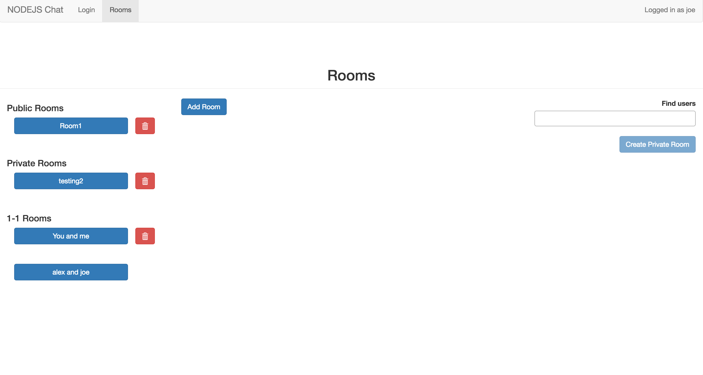
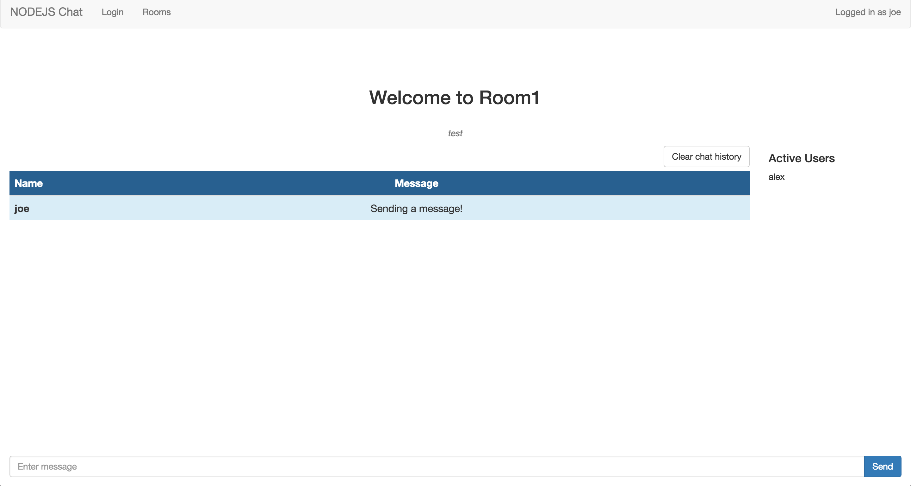

Our senior design project is underway right now. We are in the designing phase. We have not written any code yet for this project.
We are going to be working on a product called Cattle Krush. This is a product used in the agriculture industry to convey real-time data to cattle-owners about the best time to buy and sell cattle. The goal of this application is to alert cattle-owners when the best time to sell their cattle is so that they can make a profit.
Where do we come in? Well, this company has had a hard time getting an application on the App Store. Our job is to create a cross-platform (iOS, Android, and web) application that has the same functionality as the existing application.
At this point in the design, we believe that we will be using NativeScript as our cross-platform framework.
Oddly enough, I love refactoring and cleaning up code. There is great satisfaction in writing code that is easy to understand. I am looking forward to this project because we will be refactoring and cleaning up the current code. I have no previous experience in NativeScript, so I am looking forward to learning how to interact with this framework.
In this group project, we created a web application that did budget tracking and handling. You would have some initial income for your "budget term" (or pay period) and would create different categories that would split that money up. For example, you could have a food category, a clothes category, and a bills category. Expenses would be added to those categories. This application let you easily track how your money was spent. This same purpose could probably be acheived with an Excel-like application. However, this application has a much friendlier UI and is built to track budgets.
What makes this application distinct from a spreadsheet is that it can read receipts. You can upload an image of a receipt, and it will read the contents of the receipt, and build out an expense with the information it found about the various purchases listed on the receipt. This is nice because the user does not have to input every detail of a receipt. Instead, he or she can take a quick photo of their receipt and have the contents be added to their budget.
To extract the words from the receipt, we connected with a service called OCR.Space. This would search the image we supplied it for words and give those words back to us. This service helped us a lot with getting words from an image. It was also our limiting factor. This service would not always give us all of the words on the receipt (which means we can't list every puchased item), and it would also not correctly read words (lots of misspells). To get around the misspells, we used Bing Spell Check API to autocorrect the words that we received from the OCR (Optical Character Recognition) API.
This application was written in Java, running on Google App Engine.
Our demos for this application are split up into two parts:
In this group project, we created an application that would allow users create groups, enroll people in those groups, and keep track of members in the groups. The main twist of this project was that it had the feature of face recognition. You enrolled someone in your selected group by uploading a picture of them (along with some other basic information). Now the app can recognize a new picture of that person.
The primary function of this app is for educational purposes. The group owner can see all the people in his group, refresh his/her memory by seeing a picture of them, and can leave notes on that person.
A secondary function of this app would include attendance tracking. At the beginning of a semester, the instructor could pass around some type of tablet and have each student take a picture of themselves and upload it to the app. Then, each day, the instructor could pass around his tablet and have each student take a picture of themselves. If they were recognized, their "time last seen" would be updated to the current time.
This application was written in Java, built to run on Google App Engine. We used servlets for all of our request handling. Detecting faces in an image and recognizing them was handled by a service that we connected with via API called Kairos. This service alleviated a lot of the workload by doing all of the heavy lifting in detecting and recognizing faces.
Click here to see our demo video.
In this project, I was exploring the use of the JavaScript library, Node. Node is great for creating very fast, responsive web applications. One of the most common things to do in experimenting with Node is to create some sort of chat room. That is exactly what I did - I created a chat service. This service allows users to create public, private, and 1-1 chat rooms where they can chat with other friends or users of the application. A cool feature is that you can very quickly see when other users of the room are typing a message. Also, you can see what users are active in a given room.
 
In this project, I created an application that would
crawl
through wikipedia. The purpose of this crawling was to create a
graph
representation of the wiki pages. The application starts by
receiving a seed url (extention from the wikipedia base url). From
there, it begins crawling the seed url page, until the number of links
collected have reached some pre-determined limit. After receiving all
of these links (represented as vertices on the graph), the application
then began constructing edges between the vertices. The following is
the output graph when calling new WikiCrawler("/wiki/Computer_Science", 1000, "WikiCS.txt"),
where "/wiki/Computer_Science" is the seed url, 1000 is the total number of
new vertices to fetch, and "WikiCS.txt" is the output file.
Each line is a vertex pair. That means that the item on the left side
of the column is connected to the item on the right side of the column.
Here is the output file: